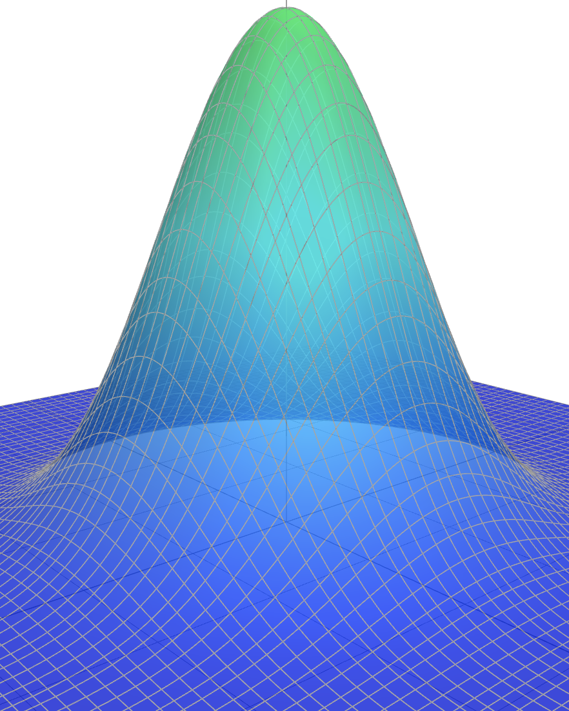
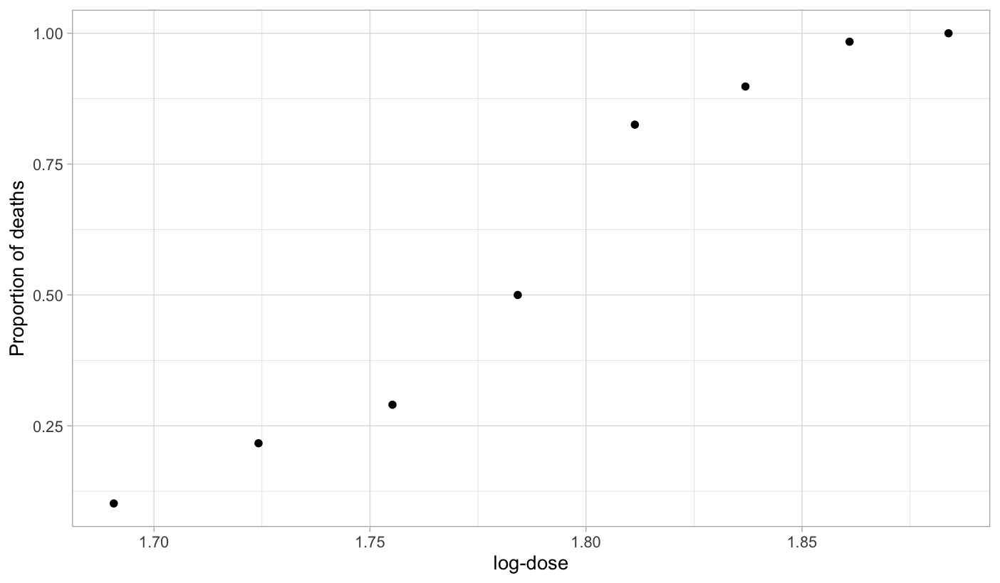
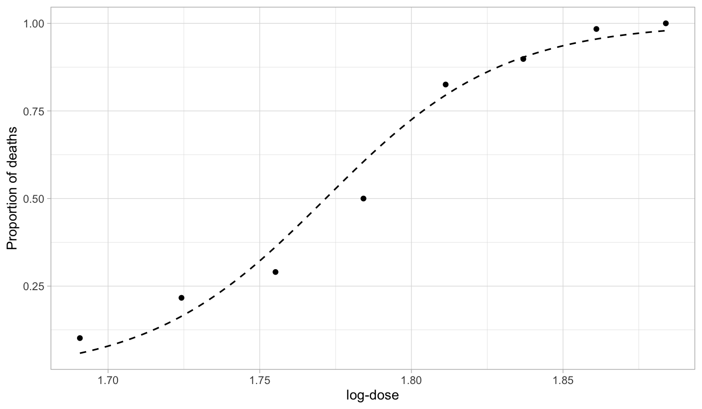
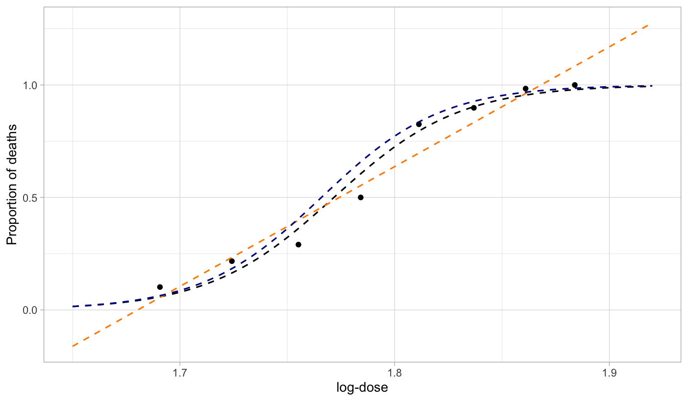
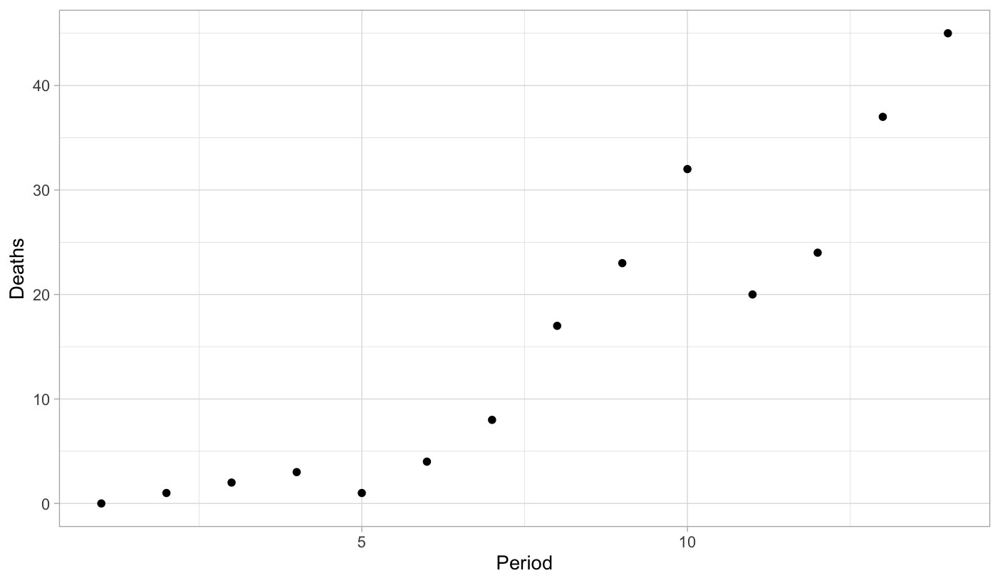
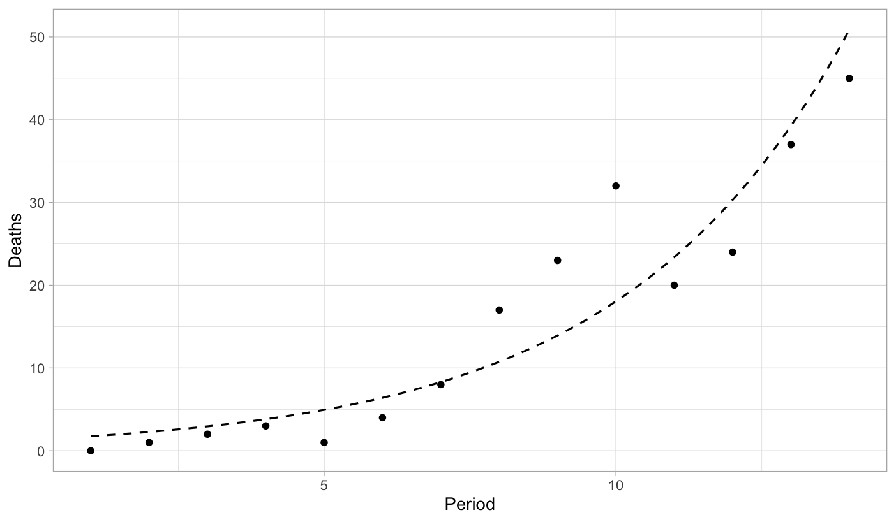
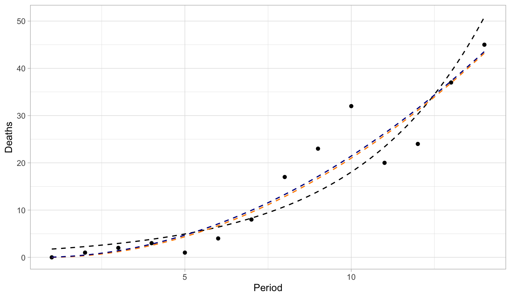
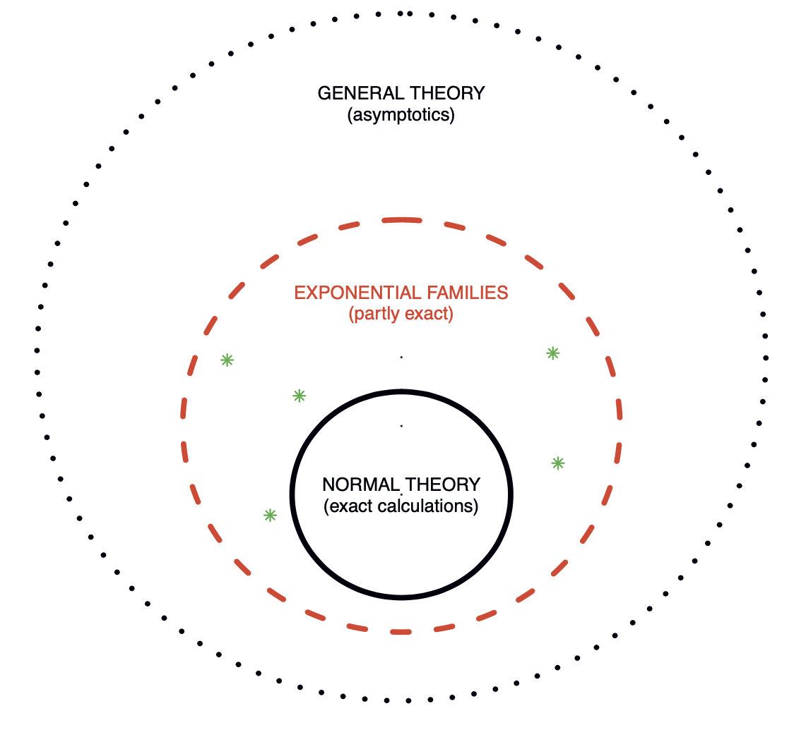

| n | deaths | logdose |
|---|---|---|
| 59 | 6 | 1.6907 |
| 60 | 13 | 1.7242 |
| 62 | 18 | 1.7552 |
| 56 | 28 | 1.7842 |
| 63 | 52 | 1.8113 |
| 59 | 53 | 1.8369 |
| 62 | 61 | 1.8610 |
| 60 | 60 | 1.8839 |
Generalized Linear Models
Statistics III - CdL SSE
Homepage

This unit will cover the following topics:
- Exponential dispersion families
- Likelihood, inference, and testing
- Iteratively Re-weighted Least Squares (IRLS)
- Deviance, model checking, and residuals
- Model selection
GLMs are regression models with a linear predictor, where the response variable follows an exponential dispersion family.
The symbol 📖 means that a few extra steps are discussed in the handwritten notes.
Introduction
Preliminaries
GLMs are a class of regression models in which a response random variable Y_i is modeled as a function of a vector of covariates \bm{x}_i \in \mathbb{R}^p.
The random variables Y_i are not restricted to be Gaussian. For example:
- Y_i \in \{0,1\}, known as binary regression
- Y_i \in \{0,1,\dots\}, known as count regression
- Y_i \in (0,\infty) or Y_i \in (-\infty,\infty)
- Y_i \in \{0,1\}, known as binary regression
Gaussian linear models are a special case of GLMs, arising when Y_i \in (-\infty,\infty).
The response random variables are collected in the random vector \bm{Y} = (Y_1,\dots,Y_n)^T, whose observed realization is \bm{y} = (y_1,\dots,y_n)^T.
The design matrix \bm{X} is an n \times p non-stochastic matrix containing the covariate values. The jth variable (column) is denoted by \tilde{\bm{x}}_j, while the ith observation (row) is \bm{x}_i.
We assume that \bm{X} has full rank, that is, \text{rk}(\bm{X}) = p with p \le n.
Beetles data, from Bliss (1935)
- The
Beetlesdataset originates from Bliss (1935). It records the number of adult flour beetles that died after a 5-hour exposure to gaseous carbon disulphide.
We aim to predict the proportion of
deathsas a function oflogdose.Modeling death proportions directly with linear models is inappropriate. A variable transformation provides a more principled solution, but it comes with drawbacks.
Beetles data, a dose-response plot

- There is a clear positive and non-linear pattern between the proportion of deaths as a function of the logdose. The response variable take values in [0, 1].
Modelling the Beetles data
Let Y_i be the number of dead beetles out of m_i, and let x_i denote the log-dose. By definition, S_i \in \{0, 1, \dots, m_i\} for i = 1,\dots,8.
It is natural to model each Y_i as independent binomial random variables, counting the number of deaths out of m_i individuals. In other words: S_i \overset{\text{ind}}{\sim} \text{Binomial}(m_i, \pi_i), \qquad i = 1,\dots,8, where \pi_i is the probability of death at a given dose x_i. Moreover, we have \mathbb{E}\left(\frac{S_i}{m_i}\right) = \pi_i = \mu_i.
A modeling approach, called logistic regression, specifies:
g(\pi_i) = \log\left(\frac{\pi_i}{1 - \pi_i}\right) = \beta_1 + \beta_2 x_i \quad \Longrightarrow \quad \pi_i = g^{-1}(\beta_1 + \beta_2 x_i) = \frac{\exp(\beta_1 + \beta_2 x_i)}{1 + \exp(\beta_1 + \beta_2 x_i)}. for some parameters \beta_1, \beta_2 \in \mathbb{R}. Note that \pi_i \in (0, 1) by construction.
Beetles data, fitted model

- The maximum likelihood estimates are \hat{\beta}_1 = -60.72 and \hat{\beta}_2 = 34.3. This yields the predictive curve \hat{\pi}(x) = g^{-1}(\hat{\beta}_1 + \hat{\beta}_2 x), which estimates the mean proportion \mathbb{E}(S_i / m_i).
A comparison with old tools I 📖
The prediction \hat{\beta}_1 + \hat{\beta}_2 x_i is unrestricted, meaning it could produce values like “1.3” or “-2” as estimated proportions, which is clearly undesirable.
The additive structure Y_i = \beta_1 + \beta_2 x_i + \epsilon_i cannot hold with iid errors \epsilon_i, because S_i, and thus Y_i, are discrete. As a result, the errors are always heteroschedastic.
If m_i = 1, i.e. when the data are binary, all the above issues are exacerbated.
A comparison with old tools II 📖
The interpretation of \hat{\beta} is less clear, as they refer to the mean of \text{logit}(\tilde{Y}_i) instead of \mathbb{E}(Y_i).
An arbitrary boundary correction is needed.
Inference is problematic and requires further corrections, because of heteroschedastic errors.
This approach is not compatible with the reasonable assumption S_i \sim \text{Binomial}(m_i, \pi_i).
A comparison with old tools III

- The black line is the predicted curve of a logistic regression GLM. The orange line is the predictived curve of a linear model. The blue line is the predictive curve of a linear model after an empirical logit variable transformation.
Aids data
- Number of AIDS
deathsin Australia in a sequence of three-months periods between 1983 and 1986.
| 1983-1 | 1984-1 | 1985-1 | 1986-1 | 1983-2 | 1984-2 | 1985-2 | |
|---|---|---|---|---|---|---|---|
| deaths | 0 | 1 | 2 | 3 | 1 | 4 | 8 |
| period | 1 | 2 | 3 | 4 | 5 | 6 | 7 |
| 1986-2 | 1983-3 | 1984-3 | 1985-3 | 1986-3 | 1983-4 | 1984-4 | |
|---|---|---|---|---|---|---|---|
| deaths | 17 | 23 | 32 | 20 | 24 | 37 | 45 |
| period | 8 | 9 | 10 | 11 | 12 | 13 | 14 |
We are interested in predicting the number of
deathsas a function of theperiodof time.The response variable Y_i \in \{0, 1, \dots\} is a non-negative count.
Aids data, scatter plot

- There is a clear positive association between period and deaths. However, the increase appears to be faster than linear. Note that both the mean and the variability of Y_i increase over time.
Modelling the Aids data
- Let Y_i be the number of deaths, and let x_i denote the period. By definition, Y_i \in \{0, 1, \dots\} are non-negative counts, for i = 1,\dots,14.
We model Y_i as independent Poisson random variables, counting the number of deaths: Y_i \overset{\text{ind}}{\sim} \text{Poisson}(\mu_i), \qquad i = 1,\dots,14, where \mu_i is the mean of Y_i, namely \mathbb{E}(Y_i) = \mu_i.
A modeling approach, called Poisson regression, specifies:
g(\mu_i) = \log(\mu_i) = \beta_1 + \beta_2 x_i \quad \Longrightarrow \quad \mu_i = g^{-1}(\beta_1 + \beta_2 x_i) = \exp(\beta_1 + \beta_2 x_i), for some parameters \beta_1, \beta_2 \in \mathbb{R}. Note that \mu_i > 0 by construction.Under this specification, the variances of the observations are
\text{var}(Y_i) = \mu_i = \exp(\beta_1 + \beta_2 x_i), which increases with x, as desired. This implies that Y_1,\dots,Y_n are heteroschedastic, but this is not an issue in GLMs, as this aspect is automatically accounted for.
Aids data, fitted model

- The maximum likelihood estimates are \hat{\beta}_1 = 0.30 and \hat{\beta}_2 = 0.26. This yields the predictive curve \hat{\mu}(x) = \exp(\hat{\beta}_1 + \hat{\beta}_2 x), which estimates the mean \mathbb{E}(Y_i).
A comparison with old tools I
The interpretation of \hat{\beta} is less clear, as they refer to the mean of \sqrt{Y}_i instead of \mathbb{E}(Y_i).
This approach is not compatible with the reasonable assumption Y_i \sim \text{Poisson}(\mu_i) and it only valid as an asymptotic approximation.
A comparison with old tools II

- The black line is the predicted curve of a Poisson regression GLM with logarithmic link. The orange line is the predicted curve of a linear model with a square-root transformation. The blue line is the predictive curve of a Poisson regression GLM with square-root link.
The components of a GLM
- Random component. This specifies the probability distribution response variable Y_i. The observations \bm{y} =(y_1,\dots,y_n) on that distribution are treated as independent.
- Linear predictor. For a parameter vector \bm{\beta} = (\beta_1,\dots,\beta_p)^T and an n \times p design matrix \bm{X}, the linear predictor is \bm{\eta} = \bm{X}\beta. We will also write \eta_i = \bm{x}_i^T\beta = \beta_1x_{i1} + \cdots + x_{ip}\beta_p, \qquad i=1,\dots,n.
- Link function. This is an invertible and differentiable function g(\cdot) applied to each component of the mean \mu_i = \mathbb{E}(Y_i) that relates it to the linear predictor: g(\mu_i) = \eta_i = \bm{x}_i^T\beta, \qquad \Longrightarrow \qquad \mu_i = g^{-1}(\eta_i) = g^{-1}(\bm{x}_i^T\beta).
Random component of a GLM
In GLMs the random variables Y_i are independent and they are distributed according to an exponential dispersion family, whose definition will be provided in a few slides.
For now, it suffices to say that the distributions most commonly used in Statistics, such as the normal, binomial, gamma, and Poisson, are exponential family distributions.
Exponential dispersion families are characterized by their mean and variance. Let v(\mu) > 0 be a function of the mean, called variance function and let a_i(\phi) >0 be functions of an additional unknown parameter \phi > 0 called dispersion.
Notable examples
Exponential dispersion families
Overview
- Figure 1 of Efron (2023). Three level of statistical modeling.

The prime role of exponential families in the theory of statistical inference was first emphasized by Fisher (1934).
Most well-known distributions—such as Gaussian, Poisson, Binomial, and Gamma—are instances of exponential families.
Definition
By specifying the functions a_i(\cdot), b(\cdot) and c(\cdot) one obtain a particular parametric model.
The support \mathcal{Y} of Y_i does not depend on the parameters \phi or \theta_i and b(\cdot) can be differentiated infinitely many times. In particular, this is a regular statistical model.
As mentioned, we typically have a_i(\phi) = \phi, a_i(\phi) = 1 or a_i(\phi) = \phi / w_i where w_i are known weights. When a_i(\phi) = 1 and c(y_i, \phi) = c(y_i) we obtain p(y_i; \theta_i) = \exp\left\{\theta_i y_i - b(\theta_i) + c(y_i)\right\}, which is called natural exponential family of order 1.
Mean and variance I 📖
Let us consider the log-likelihood contribution of the ith observations, which is defined as \ell(\theta_i, \phi; y_i) = \log{p(y_i; \theta_i, \phi)} = \frac{\theta_i y_i - b(\theta_i)}{a_i(\phi)} + c(y_i, \phi). If you prefer, this is the log-likelihood when the sample size n = 1 and we only observe Y_i.
The score and hessian functions, namely the first and second derivative over \theta_i are \frac{\partial}{\partial \theta_i} \ell(\theta_i, \phi; y_i) = \frac{y_i - b'(\theta_i)}{a_i(\phi)}, \qquad \frac{\partial^2}{\partial \theta_i^2}\ell(\theta_i, \phi; y_i) = \frac{-b''(\theta_i)}{a_i(\phi)}. where b'(\cdot) and b''(\cdot) denote the first and second derivative of b(\cdot).
Recall the following Bartlett identities, valid in any regular statistical model: \begin{aligned} \mathbb{E}\left(\frac{\partial}{\partial \theta_i} \ell(\theta_i, \phi; Y_i) \right) &= 0, \\ \mathbb{E}\left\{\left(\frac{\partial}{\partial \theta_i} \ell(\theta_i, \phi; Y_i) \right)^2\right\} = \text{var}\left(\frac{\partial}{\partial \theta_i} \ell(\theta_i, \phi; Y_i) \right) &= \mathbb{E}\left(-\frac{\partial^2}{\partial \theta_i^2}\ell(\theta_i, \phi; Y_i)\right). \end{aligned}
Mean and variance II 📖
- Specializing Bartlett identities in exponential dispersion families, we obtain \mathbb{E}\left(\frac{Y_i - b'(\theta_i)}{a_i(\phi)}\right) = 0, \qquad \text{var}\left(\frac{Y_i - b'(\theta_i)}{a_i(\phi)}\right) = \frac{\text{var}(Y_i)}{a_i(\phi)^2} = \frac{b''(\theta_i)}{a_i(\phi)}. Re-arranging the terms, we finally get the following key result.
The mean \mu_i = b'(\theta_i) does not depend on the dispersion parameter.
We have b''(\cdot) > 0 because \text{var}(Y_i), which means that b(\cdot) is a convex function.
Moreover, the function b'(\theta) is continuous and monotone increasing and hence invertible.
The function b(\cdot) is related to the moment generating function of Y_i. Thus, higher order derivatives of b(\cdot) allows the calculations of skewness, kurtosis, etc.
Mean parametrization, variance function
The inverse relationship, re-obtaining \theta_i as a function of \mu_i, is denoted with \theta_i = \theta(\mu_i) = b'^{-1}(\mu_i).
Using this notation, we can express the variance of Y_i as a function of \mu_i as follows \text{var}(Y_i) = a_i(\phi)b''(\theta_i) = a_i(\phi)b''(\theta(\mu_i)) = a_i(\phi)v(\mu_i), where v(\mu_i) := b''(\theta(\mu_i)) is the variance function.
The domain \mathcal{M} and the variance function v(\mu) characterize the function b(\cdot) and the entire distribution, for any given a_i(\phi). This justifies the notation Y_i \sim \text{ED}(\mu_i, a_i(\phi)v(\mu_i)).
Gaussian distribution 📖
Let Y_i \sim \text{N}(\mu_i, \sigma^2). The density function of Y_i can be written as \begin{aligned} p(y_i; \mu_i, \sigma^2) &= \frac{1}{\sqrt{2 \pi \sigma^2}}\exp\left\{-\frac{1}{2\sigma^2}(y_i - \mu_i)^2\right\} \\ &=\exp\left\{\frac{y_i \mu_i - \mu_i^2/2}{\sigma^2}- \frac{\log(2\pi\sigma^2)}{2}-\frac{y_i^2}{2\sigma^2}\right\} \end{aligned}
Then, we can recognize the following relationships: \theta_i = \theta(\mu_i) = \mu_i, \quad a_i(\phi) = \phi = \sigma^2, \quad b(\theta_i) = \frac{\theta_i^2}{2}, \quad c(y_i, \phi) = - \frac{\log(2\pi\phi)}{2}-\frac{y_i^2}{2\phi}. In the Gaussian case, the mean parametrization and the natural parametrization coincide. Moreover, the dispersion \phi coincides with the variance \sigma^2.
Using the results we previously discussed, we obtain the well-known relationships \mathbb{E}(Y_i) = b'(\theta_i) = \theta_i, \qquad \text{var}(Y_i) = a_i(\phi)b''(\theta_i) = \phi. The variance function v(\mu_i) = 1 is constant. We will write Y_i \sim \text{ED}(\mu_i, \phi) with \mu_i \in \mathcal{M} = \mathbb{R}.
Poisson distribution 📖
Let Y_i \sim \text{Poisson}(\mu_i). The pdf function of Y_i can be written as \begin{aligned} p(y_i; \mu_i) &= \frac{\mu_i^{y_i} e^{-\mu_i}}{y_i!}=\exp\{y_i \log(\mu_i) - \mu_i - \log(y_i!)\} \\ &=\exp\{y_i \theta_i - e^{\theta_i} - \log(y_i!)\}, \qquad y_i = 0, 1, 2,\dots. \end{aligned}
Then, we can recognize the following relationships: \begin{aligned} \theta_i &= \theta(\mu_i) = \log(\mu_i), \quad &&a_i(\phi) = 1, \\ b(\theta_i) &= e^{\theta_i}, \quad &&c(y_i, \phi) = c(y_i) = -\log(y_i!). \end{aligned} There is no dispersion parameter since a_i(\phi) = 1.
Using the results we previously discussed, we obtain the well-known relationships \begin{aligned} \mathbb{E}(Y_i) &= b'(\theta_i) = e^{\theta_i} = \mu_i, \\ \text{var}(Y_i) &= a_i(\phi) b''(\theta_i) = e^{\theta_i} = \mu_i. \end{aligned} The variance function v(\mu_i) = \mu_i is linear. We will write Y_i \sim \text{ED}(\mu_i, \mu_i) with \mu_i \in (0, \infty).
Gamma distribution I 📖
Let Y_i \sim \text{Gamma}(\alpha, \lambda_i). The density function of Y_i can be written as \begin{aligned} p(y_i; \alpha, \lambda_i) &= \frac{\lambda_i^\alpha y_i^{\alpha-1}\alpha e^{-\lambda_i y_i}}{\Gamma(\alpha)} \\ &=\exp\left\{\alpha\log{\lambda_i} - \lambda_i y_i + (\alpha-1)\log{y_i} - \log{\Gamma}(\alpha)\right\} \\ &=\exp\left\{\alpha\left(\log{\lambda_i} - \frac{\lambda_i}{\alpha} y_i\right) + (\alpha-1)\log{y_i} - \log{\Gamma}(\alpha)\right\} \\ &=\exp\left\{\frac{\theta_i y_i + \log(-\theta_i)}{\phi} - (1/\phi)\log{\phi}+ (1/\phi - 1)\log{y_i} - \log{\Gamma}(1/\phi)\right\}, \qquad y > 0,\\ \end{aligned} having defined the dispersion \phi = 1/\alpha and the natural parameter \theta_i = -\lambda_i/\alpha.
Then, we can recognize the following relationships: \begin{aligned} \quad a_i(\phi) &= \phi, \qquad b(\theta_i) = - \log(-\theta_i), \\ c(y_i, \phi) &= - (1/\phi)\log{\phi}+ (1/\phi - 1)\log{y_i} - \log{\Gamma}(1/\phi). \end{aligned}
Gamma distribution II 📖
Using the results we previously discussed, we obtain the well-known relationships \mathbb{E}(Y_i) = b'(\theta_i) = - \frac{1}{\theta_i} = \frac{\alpha}{\lambda_i} = \mu_i, \qquad \text{var}(Y_i) = a_i(\phi)b''(\theta_i) = \frac{\phi}{\theta_i^2} = \frac{\alpha}{\lambda_i^2}.
At the same time, we can write the inverse relationship linking \theta_i to the mean as \theta_i = \theta(\mu_i) = - \frac{1}{\mu_i} from which we finally obtain the following quadratic variance function v(\mu_i) = \mu_i^2.
We will write Y_i \sim \text{ED}(\mu_i, \phi\mu_i^2) with \mu_i \in (0, \infty).
Binomial distribution I 📖
- Let S_i \sim \text{Binomial}(m_i, \pi_i), with \pi_i \in (0, 1). The random variable Y_i = S_i/m_i has density \begin{aligned} p(y_i; m_i, \pi_i) &= \binom{m_i}{m_i y_i}\pi_i^{m_i y_i}(1 - \pi_i)^{m_i - m_i y_i}\\ &=\binom{m_i}{m_i y_i}\left(\frac{\pi_i}{1 - \pi_i}\right)^{m_i y_i}(1 - \pi_i)^{m_i}\\ &=\exp\left\{m_iy_i\log\left(\frac{\pi_i}{1 - \pi_i}\right) + m_i\log(1 - \pi_i) + \log\binom{m_i}{m_i y_i}\right\}, \end{aligned} for y_i \in \{0, 1/m_i, 2/m_2, \dots, m_i/m_i\}. This can be written as p(y_i; m_i, \pi_i) =\exp\left\{\frac{y_i\theta_i - \log\{1 + \exp(\theta_i)\}}{1/m_i}+ \log\binom{m_i}{m_i y_i}\right\}, where the natural parameter is \theta_i = \text{logit}(\pi_i) = \log\{\pi/(1-\pi_i)\}.
Binomial distribution II 📖
Note that \mathbb{E}(Y_i) = \mathbb{E}(Z_i / m_i) = \pi_i = \mu_i. This means there no dispersion parameter \phi and \theta_i = \text{logit}(\mu_i), \quad a_i(\phi) = \frac{1}{m_i}, \quad b(\theta_i) = \log\{1 + \exp(\theta_i)\}, \quad c(y_i) = \log\binom{m_i}{m_i y_i}.
Using the general formulas therefore we obtain \begin{aligned} \mathbb{E}(Y_i) &= b'(\theta_i) = \frac{\exp(\theta_i)}{1 + \exp(\theta_i)} = \mu_i, \\ \text{var}(Y_i) &= a_i(\phi)b''(\theta_i) = \frac{1}{m_i}\frac{\exp(\theta_i)}{[1 + \exp(\theta_i)]^2} = \frac{\mu_i (1 - \mu_i)}{m_i}, \end{aligned} from which we obtain that the variance function is v(\mu_i) = \mu_i(1-\mu_i) is quadratic.
We will write Y_i \sim \text{ED}(\mu_i, \mu_i(1-\mu_i)) with \mu_i \in \mathcal{M} = (0, 1).
A summary of notable exponential dispersion families
| Model | \text{N}(\mu_i, \sigma^2) | \text{Gamma}(\alpha, \alpha/\mu_i) | \frac{1}{m_i}\text{Binomial}(m_i, \mu_i) | \text{Poisson}(\mu_i) |
|---|---|---|---|---|
| Support \mathcal{Y} | \mathbb{R} | [0, \infty) | \{0, 1/m_i,\dots, 1\} | \mathbb{N} |
| \theta_i | \mu_i | - 1/\mu_i | \log\left(\frac{\mu_i}{1 - \mu_i}\right) | \log{\mu_i} |
| Parametric space \Theta | \mathbb{R} | (-\infty, 0) | \mathbb{R} | \mathbb{R} |
| b(\theta_i) | \theta_i^2/2 | -\log(-\theta_i) | \log\{1 + \exp(\theta_i)\} | \exp(\theta_i) |
| \phi | \sigma^2 | 1/\alpha | 1 | 1 |
| a_i(\phi) | \sigma^2 | 1/\alpha | 1/m_i | 1 |
| \mathcal{M} | \mathbb{R} | (0, \infty) | (0, 1) | (0, \infty) |
| v(\mu_i) | 1 | \mu_i^2 | \mu_i(1-\mu_i) | \mu_i |
Link functions and canonical link
Likelihood, inference, and testing
Likelihood function
Sufficient statistics
Likelihood equations I
Likelihood equations II
Likelihood equations III
Example: Poisson loglinear model
Observed and expected information I
Observed and expected information II
Asymptotic distribution of \hat{\beta}
Wald confidence intervals for \beta
Delta methods and fitted values
IRLS algorithm
Deviance, model checking, residuals
Model selection
References
Agresti, A. (2015), Foundations of Linear and Generalized Linear Models, Wiley.
Azzalini, A. (2008), Inferenza statistica, Springer Verlag.
Efron, B. (2023), Exponential Families in Theory and Practice, Cambridge University Press.
Fisher, R. A. (1934), “Two new properties of mathematical likelihood,” Proceedings of the Royal Society of London. Series A, 144, 285–307.
Salvan, A., Sartori, N., and Pace, L. (2020), Modelli lineari generalizzati, Springer.